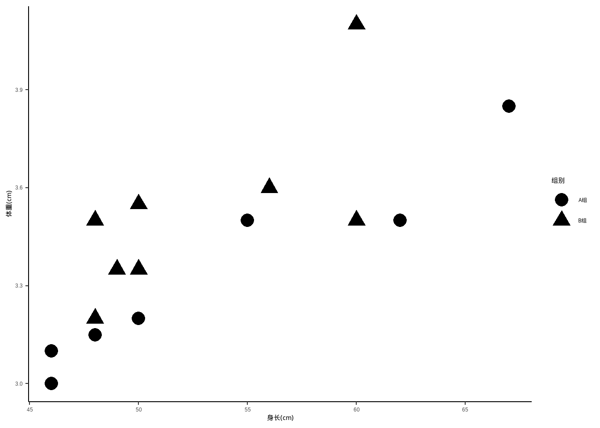
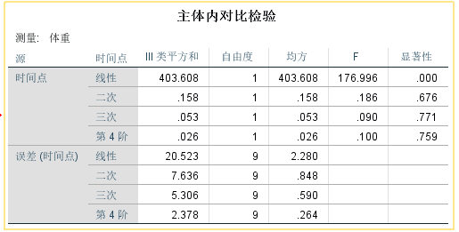
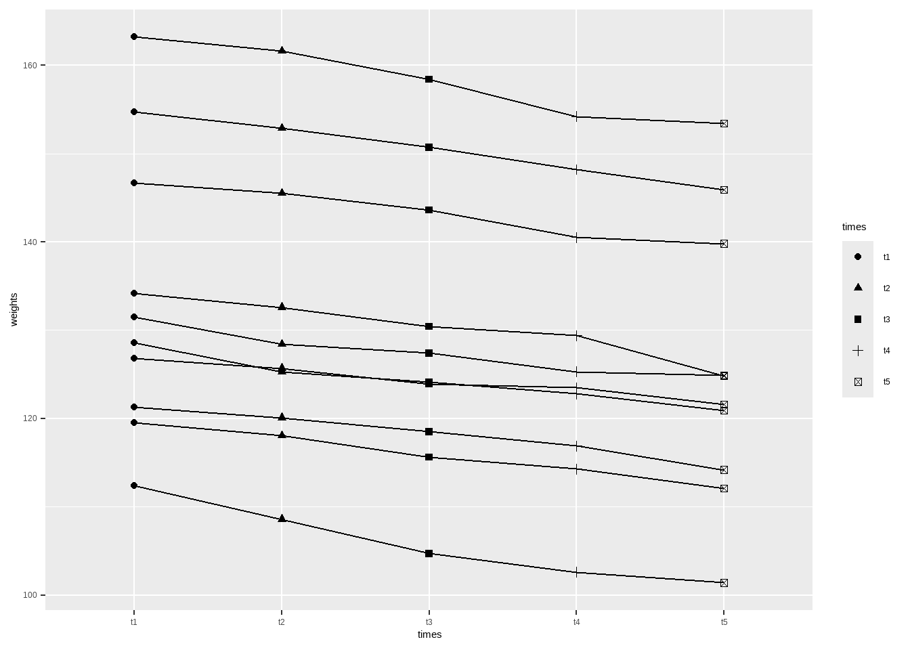
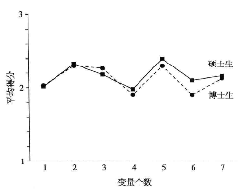

data14_1 <- haven::read_sav("datasets/例14-01.sav")
str(data14_1)
## tibble [15 × 3] (S3: tbl_df/tbl/data.frame)
## $ x1: num [1:15] 1.06 0.98 0.85 0.96 0.98 0.99 1.01 1.02 1.02 1.1 ...
## ..- attr(*, "format.spss")= chr "F8.2"
## $ x2: num [1:15] 2.56 2.42 2.35 2.55 2.65 2.6 2.35 2.89 2.54 2.64 ...
## ..- attr(*, "format.spss")= chr "F8.2"
## $ x3: num [1:15] 1.93 1.8 1.68 1.34 2.55 2.33 1.93 1.8 1.68 1.34 ...
## ..- attr(*, "format.spss")= chr "F8.2"
head(data14_1)
## # A tibble: 6 × 3
## x1 x2 x3
## <dbl> <dbl> <dbl>
## 1 1.06 2.56 1.93
## 2 0.98 2.42 1.8
## 3 0.85 2.35 1.68
## 4 0.96 2.55 1.34
## 5 0.98 2.65 2.55
## 6 0.99 2.6 2.3319 多变量数据的统计描述和统计推断
在医学研究中，尤其在临床试验中，每个观察对象记录的观察结果通常有多个反应变量（response variables）。例如，血压记录有收缩压、舒张压、脉压等；血脂记录有胆固醇脂、甘油三酯、磷脂、未脂化脂肪酸等；心功能、肺功能、微循环的检测记录项目则可多达十几个乃至几十个，这种有多个反应变量的数据称为多变量数据（multivariate data）。这里要注意多变量数据和多因素试验的区别。多因素试验指有多个干预因素（分组因素）的试验，尽管析因设计方差分析和正交设计方差分析可以分析多个试验因素的作用，但试验结果只有一个反应变量，仍然是单变量数据（univariate data）。本章的所有统计描述与统计推断都与单变量分析有关，如单变量均数、单变量方差、单变量t检验、单变量方差分析等，只是采用了适合多个反应变量的向量和矩阵的表示方法。
本章介绍的多变量数据的统计描述和统计推断方法是多元统计分析的基础，多元统计分析方法主要包括以下几种：聚类分析、主成分分析、因子分析、判别分析、结构方程模型等。
如果你接触过机器学习，那么你一定听过无监督方法，主成分分析这种方法在机器学习领域就属于无监督方法，但是在统计学领域它属于多元统计分析方法。
19.1 统计描述
多变量数据主要使用3个指标进行描述：
- 均值向量
- 协方差矩阵
- 相关矩阵
在R语言中都很好计算，有现成的函数，无需自己计算。
以孙振球《医学统计学》第4版（蓝色封面）例14-1为例进行介绍。
在一项健康调查中，随机抽取某单位15名正常成年男性测量血脂，记录甘油三酯（mmol/L）、总胆固醇（mmol/L）和高密度脂蛋白胆固醇（mmol/L），结果见表14-1。试对这3个反应变量进行多变量描述。
先读取数据：
x1是甘油三酯，x2是总胆固醇，x3是高密度脂蛋白。
下面就是对这个数据进行统计描述，首先是各列（各个变量）的均值：
colMeans(data14_1)
## x1 x2 x3
## 1.020000 2.728667 2.043333然后是协方差矩阵：
cov(data14_1)
## x1 x2 x3
## x1 0.005757143 0.01029286 0.009314286
## x2 0.010292857 0.08864095 0.080211905
## x3 0.009314286 0.08021190 0.186838095最后是相关矩阵：
cor(data14_1) # 相关矩阵
## x1 x2 x3
## x1 1.0000000 0.4556331 0.2839967
## x2 0.4556331 1.0000000 0.6232882
## x3 0.2839967 0.6232882 1.0000000如果要计算相关系数的P值，可以使用Hmics包（方法非常多，以后再慢慢介绍）：
library(Hmisc)
# 结果中的P就是P值矩阵
rcorr(as.matrix(data14_1))$P # 需要矩阵格式
## x1 x2 x3
## x1 NA 0.08785736 0.3049796
## x2 0.08785736 NA 0.0130474
## x3 0.30497964 0.01304740 NA以上3个多元描述统计量，均值向量描述3个测量指标的平均水平，协方差矩阵描述这3个指标的变异程度，相关矩阵描述这3个指标的相关性。
由相关矩阵可知，甘油三酯与总胆固醇的相关系数为0.456（P=0.088），甘油三酯与高密度脂蛋白胆固醇的相关系数为0.284（P=0.305），总胆固醇与高密度脂蛋白胆固醇的相关系数为0.623（P=0.013)。
19.2 多元正态分布
在单变量统计描述和推断中，通常假定数据服从正态分布。同理，在多变量统计描述和推断中，也是通常假定数据服从多元正态分布。
单变量数据可以使用Shapiro-Wilk检验数据的正态性，多变量数据也有多种方法可以检验正态性。
可以借助MVN包中的mvn函数，或者mvnormtest包中的mshapiro.test函数等实现多变量数据的正态性检验。
library(mvnormtest)
mshapiro.test(t(data14_1)) # 注意转置
##
## Shapiro-Wilk normality test
##
## data: Z
## W = 0.90331, p-value = 0.1069
library(MVN)
mvn(data14_1)$multivariateNormality # 默认Henze-Zirkler法
## Test HZ p value MVN
## 1 Henze-Zirkler 0.5079275 0.5592683 YES结果P>0.05，可以认为符合正态性。
19.3 组间差别的比较
多变量数据的假设检验和单变量数据非常相似，单变量数据常用的方法有t检验、方差分析、秩和检验等，多变量数据则是hotelling-T2检验、多变量方差分析、多变量非参数检验等。
19.3.1 单组资料
孙振球《医学统计学》第4版（蓝色封面）例14-2：随机抽取某单位5名怀疑有冠心病的成年男性，测量其甘油三酯（mmol/L）、总胆固醇mmol/L）和高密度脂蛋白胆固醇（mmol/L）含量。根据例14-1已知，该单位正常成年男性的甘油三酯、总胆固醇和高密度脂蛋白胆固醇均数分别为1.02mmol/L、2.73mmol/L和2.04mmol/L。问该单位怀疑冠心病成年男性的血脂与正常成年男性的血脂有无差别？
读取数据：
data14_2 <- haven::read_sav("datasets/例14-02.sav")
head(data14_2)
## # A tibble: 5 × 3
## x1 x2 x3
## <dbl> <dbl> <dbl>
## 1 1.78 0.83 -1.01
## 2 0.67 0.96 -0.84
## 3 0.56 0.83 -0.39
## 4 0.66 1.12 -1.03
## 5 0.21 0.160 0.4x1是甘油三酯，x2是总胆固醇，x3是高密度脂蛋白。
# 查看下数据的均值和协方差矩阵
colMeans(data14_2)
## x1 x2 x3
## 0.776 0.780 -0.574
cov(data14_2)
## x1 x2 x3
## x1 0.34993 0.08295 -0.23692
## x2 0.08295 0.13435 -0.20485
## x3 -0.23692 -0.20485 0.36283单样本的hotelling-T2检验可通过ICSNP包中的HotellingsT2函数实现（在进行hotelling-T2检验前需要检验正态性，略）：
library(ICSNP)
ICSNP::HotellingsT2(X = data14_2, mu=c(1.02, 2.73, 2.04), test = "f")
##
## Hotelling's one sample T2-test
##
## data: data14_2
## T.2 = 2389.8, df1 = 3, df2 = 2, p-value = 0.0004183
## alternative hypothesis: true location is not equal to c(1.02,2.73,2.04)结果显示P值小于0.01，可认为怀疑冠心病成年男性的血脂与正常成年男性的血脂有差别。根据3个样本均值可知，该单位怀疑冠性病成年男性甘油三酯和总胆固醇高于正常成年男性，高密度脂蛋白低于正常成年男性。
但是要注意，ICSNP结果中的T.2的值其实是F值，不是T2的值（由于计算过程的差异，单样本检验的F值和书中不同）。
除了ICSNP外，还可以使用DescTools::HotellingsT2Test实现，但是该函数完全来自于ICSNP包，基本完全一样，所以不再介绍，还有一个rrcov包也可以实现hotelling-T2检验，使用方法如下：
rrcov::T2.test(x = data14_2, mu=c(1.02, 2.73, 2.04))
##
## One-sample Hotelling test
##
## data: data14_2
## T2 = 14338.9, F = 2389.8, df1 = 3, df2 = 2, p-value = 0.0004183
## alternative hypothesis: true mean vector is not equal to (1.02, 2.73, 2.04)'
##
## sample estimates:
## x1 x2 x3
## mean x-vector 0.776 0.78 -0.574结果和ICSNP的结果是一样的，其中的F值就是ICSNP结果中的T.2的值。
19.3.2 两组资料
以孙振球《医学统计学》第4版（蓝色封面）例14-3为例。
某妇幼保健院将孕妇随机分为两组，一组接受孕期保健教育，另一组作为对照。表14-3是同一日出生的13名顺产婴儿的体重和身长，问孕期保健教育对婴儿生长发育有无促进作用。
先读取数据：
data14_3 <- haven::read_sav("datasets/例14-03.sav")
data14_3
## # A tibble: 13 × 3
## group weight height
## <dbl> <dbl> <dbl>
## 1 1 3.05 50
## 2 1 4.1 50
## 3 1 3.5 53
## 4 1 3.64 50
## 5 1 3.6 52
## 6 1 4 55
## 7 2 3.2 50
## 8 2 3 46
## 9 2 3 45
## 10 2 3.35 47
## 11 2 2.6 50
## 12 2 3.55 52
## 13 2 3.34 50
str(data14_3)
## tibble [13 × 3] (S3: tbl_df/tbl/data.frame)
## $ group : num [1:13] 1 1 1 1 1 1 2 2 2 2 ...
## ..- attr(*, "format.spss")= chr "F8.0"
## $ weight: num [1:13] 3.05 4.1 3.5 3.64 3.6 ...
## ..- attr(*, "format.spss")= chr "F8.2"
## $ height: num [1:13] 50 50 53 50 52 55 50 46 45 47 ...
## ..- attr(*, "format.spss")= chr "F8.0"计算下各组的身高和体重的均值：
tapply(data14_3[,-1], data14_3$group, FUN = colMeans)
## $`1`
## weight height
## 3.64750 51.66667
##
## $`2`
## weight height
## 3.148571 48.571429下面进行多变量的统计推断，也是使用hotelling-T2检验：
with(data14_3,
ICSNP::HotellingsT2(cbind(weight,height) ~ group) # 注意使用格式
)
##
## Hotelling's two sample T2-test
##
## data: cbind(weight, height) by group
## T.2 = 4.3119, df1 = 2, df2 = 10, p-value = 0.04463
## alternative hypothesis: true location difference is not equal to c(0,0)再次提醒，这个R包结果中的T.2是F值，这里的P值小于0.05，再结合均值，可得结论：孕期保健教育组出生的婴儿的身高和体重均大于对照组，孕期的保健教育对婴儿生长发育有促进作用。
也可以使用DescTools或者rrcov实现，完全一样的用法（注意函数的名字略有不同），结果也完全一样，这里就不再重复了。
但是以上方法的结果和SPSS不一样（P值是一样的，但是F值不一样，不影响结论），如果你想得到和SPSS一样的结果，可以使用Hotelling::hotelling.test实现（这个R包只能用于两样本的比较，不能用于单样本的比较），这个结果和课本（即SPSS）一样的：
print(with(data14_3,
Hotelling::hotelling.test(cbind(weight,height) ~ group)
))
## Test stat: 9.4862
## Numerator df: 2
## Denominator df: 10
## P-value: 0.0446319.3.3 多组资料
单组资料用单样本的hotelling-T2检验，两组资料用成组的hotelling-T2检验检验，是不是和t检验非常类似呢？大于两组的单变量数据是使用方差分析，同理，大于两组的多变量数据也是使用方差分析，此时是多变量方差分析（multivariate analysis of variance，MANOVA）。
以孙振球《医学统计学》第4版（蓝色封面）例14-4和利14-5为例，这两个例题用的同一个数据。
患慢性胃炎的儿童随机分为3组，其中I组、Ⅱ组为治疗组，另一组作为对照，试比较治疗药物对T细胞免疫功能（外周血T3、T4、T8细胞百分比）的影响。
data14_4 <- haven::read_sav("datasets/例14-04.sav")
data14_4
## # A tibble: 12 × 4
## t3 t4 t8 group
## <dbl> <dbl> <dbl> <dbl>
## 1 63.6 30.2 31.2 1
## 2 60 30 33.4 1
## 3 63.2 35.3 27.9 1
## 4 53.4 22.5 25 2
## 5 46.5 20 14.6 2
## 6 38.1 25.9 18.1 2
## 7 32.1 12.1 11.8 2
## 8 72.4 42.5 29.9 3
## 9 75 49.5 29.3 3
## 10 75.9 30 40 3
## 11 70 32 36.4 3
## 12 72.8 36.7 33.1 3group是组别，剩余列分别是外周血T3、T4、T8细胞百分比。
描述一下这个数据：
tapply(data14_4[,1:3], data14_4$group, colMeans) # 均值
## $`1`
## t3 t4 t8
## 62.26667 31.83333 30.83333
##
## $`2`
## t3 t4 t8
## 42.525 20.125 17.375
##
## $`3`
## t3 t4 t8
## 73.22 38.14 33.74
tapply(data14_4[,1:3], data14_4$group, cov) # 协方差矩阵
## $`1`
## t3 t4 t8
## t3 3.893333 2.606667 -4.033333
## t4 2.606667 9.023333 -7.736667
## t8 -4.033333 -7.736667 7.663333
##
## $`2`
## t3 t4 t8
## t3 87.4425 27.81250 42.26750
## t4 27.8125 34.46917 22.46083
## t8 42.2675 22.46083 32.48250
##
## $`3`
## t3 t4 t8
## t3 5.3920 3.8015 0.9315
## t4 3.8015 63.5230 -33.3870
## t8 0.9315 -33.3870 20.2830
tapply(data14_4[,1:3], data14_4$group, cor) # 相关矩阵
## $`1`
## t3 t4 t8
## t3 1.0000000 0.4397858 -0.7384047
## t4 0.4397858 1.0000000 -0.9303825
## t8 -0.7384047 -0.9303825 1.0000000
##
## $`2`
## t3 t4 t8
## t3 1.0000000 0.5065979 0.7930865
## t4 0.5065979 1.0000000 0.6712522
## t8 0.7930865 0.6712522 1.0000000
##
## $`3`
## t3 t4 t8
## t3 1.00000000 0.2054067 0.08907213
## t4 0.20540668 1.0000000 -0.93013460
## t8 0.08907213 -0.9301346 1.00000000进行多变量方差分析，直接使用R语言自带的manova函数即可：
fit <- with(data14_4,
manova(cbind(t3,t4,t8) ~ as.factor(group))
)
summary(fit, test = "Wilks")
## Df Wilks approx F num Df den Df Pr(>F)
## as.factor(group) 2 0.088735 5.4997 6 14 0.004104 **
## Residuals 9
## ---
## Signif. codes: 0 '***' 0.001 '**' 0.01 '*' 0.05 '.' 0.1 ' ' 1Wilks Lambda统计量的值为0.088735，F值为5.4997，P值小于0.01，结果与课本一致。可以认为3组慢性胃炎儿童T细胞免疫功能有差别。进一步比较治疗I组、治疗Ⅱ组和对照组的3个均数向量，结论为：慢性胃炎儿童经药物治疗后，对T细胞免疫功能（%）有影响，治疗组的T细胞免疫功能（%)均比对照组低，其中治疗Ⅱ组已降低到接近正常参考值的下限（注：正常参考值T3：66.0±9.9%，T4：43.8±9.0%，T8：31.3±7.0%）。
如果要查看每个变量的方差分析表可以使用：
# 单变量方差分析表
summary.aov(fit)
## Response t3 :
## Df Sum Sq Mean Sq F value Pr(>F)
## as.factor(group) 2 2110.01 1055.00 32.553 7.582e-05 ***
## Residuals 9 291.68 32.41
## ---
## Signif. codes: 0 '***' 0.001 '**' 0.01 '*' 0.05 '.' 0.1 ' ' 1
##
## Response t4 :
## Df Sum Sq Mean Sq F value Pr(>F)
## as.factor(group) 2 727.70 363.85 8.7197 0.007833 **
## Residuals 9 375.55 41.73
## ---
## Signif. codes: 0 '***' 0.001 '**' 0.01 '*' 0.05 '.' 0.1 ' ' 1
##
## Response t8 :
## Df Sum Sq Mean Sq F value Pr(>F)
## as.factor(group) 2 638.04 319.02 14.807 0.001425 **
## Residuals 9 193.91 21.55
## ---
## Signif. codes: 0 '***' 0.001 '**' 0.01 '*' 0.05 '.' 0.1 ' ' 1除此之外，除了Wilks Lambda统计量，还有其他几个常用的统计量：
# test = c("Pillai", "Wilks", "Hotelling-Lawley", "Roy")
summary(fit, test = "Pillai") # 通过参数更改即可
## Df Pillai approx F num Df den Df Pr(>F)
## as.factor(group) 2 1.0492 2.9424 6 16 0.03942 *
## Residuals 9
## ---
## Signif. codes: 0 '***' 0.001 '**' 0.01 '*' 0.05 '.' 0.1 ' ' 119.3.4 多变量与单变量分析
多变量分析是将m个反应变量作为一个整体，进行一次假设检验（Hotelling-T2检验或MANOVA），对组间差别作出推断。虽然在大多数情况下，多变量假设检验结论与对m个反应变量进行m次单变量假设检验（t检验或ANOVA）的结论是一致的，即多变量假设检验拒绝H0，m次单变量假设检验至少有次拒绝H0，SPSS、SAS等统计软件也是先给出多变量假设检验结果，再给出单变量假设检验结果，作为多变量分析的补充。但单变量假设检验不能代替多变量假设检验，主要理由：①m次单变量假设检验增加假阳性错误的概率，设每次单变量假设检验的检验水准定为α，做完m次检验I类错误的概率会增加。②单变量假设检验只说明某一变量在数轴分布上的组间差别，不能反映多个变量在平面或空间上的差别，两者的意义不同，各自说明各自的问题，不能相互代替。
以孙振球《医学统计学》第4版（蓝色封面）例14-6为例。下面是两组新生儿出生时的身高和体重数据，试做单变量与多变量分析。
data14_6 <- haven::read_sav("datasets/例14-06.sav")
str(data14_6)
## tibble [16 × 4] (S3: tbl_df/tbl/data.frame)
## $ weight: num [1:16] 3.1 3.2 3.5 3 3.85 3.15 3 3.5 4.1 3.5 ...
## ..- attr(*, "format.spss")= chr "F8.2"
## $ height: num [1:16] 46 50 62 46 67 48 46 55 60 48 ...
## ..- attr(*, "format.spss")= chr "F8.0"
## $ group : num [1:16] 1 1 1 1 1 1 1 1 2 2 ...
## ..- attr(*, "format.spss")= chr "F8.0"
## $ no : num [1:16] 1 2 3 4 5 6 7 8 1 2 ...
## ..- attr(*, "format.spss")= chr "F8.0"
head(data14_6)
## # A tibble: 6 × 4
## weight height group no
## <dbl> <dbl> <dbl> <dbl>
## 1 3.1 46 1 1
## 2 3.2 50 1 2
## 3 3.5 62 1 3
## 4 3 46 1 4
## 5 3.85 67 1 5
## 6 3.15 48 1 6
#data14_6$group <- factor(data14_6$group)对体重做单变量t检验（注意，只是单变量，不是单组，其实是两独立样本t检验）：
t.test(weight ~ group, data = data14_6)
##
## Welch Two Sample t-test
##
## data: weight by group
## t = -1.6219, df = 13.822, p-value = 0.1274
## alternative hypothesis: true difference in means between group 1 and group 2 is not equal to 0
## 95 percent confidence interval:
## -0.53742421 0.07492421
## sample estimates:
## mean in group 1 mean in group 2
## 3.28750 3.51875对身高做单变量t检验：
t.test(height ~ group, data = data14_6)
##
## Welch Two Sample t-test
##
## data: height by group
## t = -0.036693, df = 11.938, p-value = 0.9713
## alternative hypothesis: true difference in means between group 1 and group 2 is not equal to 0
## 95 percent confidence interval:
## -7.551649 7.301649
## sample estimates:
## mean in group 1 mean in group 2
## 52.500 52.625做双变量Hotelling-T2检验：和课本结果一致
print(with(data14_6,
Hotelling::hotelling.test(cbind(weight,height) ~ group)
))
## Test stat: 9.8669
## Numerator df: 2
## Denominator df: 13
## P-value: 0.0312
with(data14_6,
ICSNP::HotellingsT2(cbind(weight,height) ~ group)
)
##
## Hotelling's two sample T2-test
##
## data: cbind(weight, height) by group
## T.2 = 4.5811, df1 = 2, df2 = 13, p-value = 0.0312
## alternative hypothesis: true location difference is not equal to c(0,0)分别对两组新生儿出生时的体重与身长做单变量t检验：体重t=1.62，P=0.13，身长t=0.04，P=0.97，都不能拒绝H0。但双变量的HotellingT检验：T2=9.87，F=4.58，P=0.03，拒绝H0。
两组在平面分布上的差别如下图所示：
library(ggplot2)
ggplot(data14_6, aes(height, weight))+
geom_point(aes(shape=as.factor(group)),size=5)+
labs(x="身长(cm)", y="体重(cm)")+
scale_shape_discrete(name = "组别",labels=c("A组","B组"))+
theme_classic()+
theme(legend.position.inside = c(0.8,0.2))
19.4 重复测量资料的多变量分析
如果不考虑重复测量数据是否满足“球对称”假设，可将每个观察对象的m次重复测量结果看作一个向量，直接采用多变量的Hotelling-T2检验。
孙振球《医学统计学》第4版（蓝色封面）例14-7：10名肥胖患者在医生指导下服用药物减肥，按统一标准记录服药前和服药后1～4周的体重，试分析减肥效果。
data14_7 <- haven::read_sav("datasets/例14-07.sav")
str(data14_7)
## tibble [10 × 6] (S3: tbl_df/tbl/data.frame)
## $ n0: num [1:10] 1 2 3 4 5 6 7 8 9 10
## ..- attr(*, "format.spss")= chr "F8.0"
## $ t1: num [1:10] 132 155 147 163 129 ...
## ..- attr(*, "format.spss")= chr "F8.1"
## $ t2: num [1:10] 128 153 146 162 125 ...
## ..- attr(*, "format.spss")= chr "F8.1"
## $ t3: num [1:10] 127 151 144 158 124 ...
## ..- attr(*, "format.spss")= chr "F8.1"
## $ t4: num [1:10] 125 148 140 154 123 ...
## ..- attr(*, "format.spss")= chr "F8.1"
## $ t5: num [1:10] 125 146 140 153 121 ...
## ..- attr(*, "format.spss")= chr "F8.1"
head(data14_7)
## # A tibble: 6 × 6
## n0 t1 t2 t3 t4 t5
## <dbl> <dbl> <dbl> <dbl> <dbl> <dbl>
## 1 1 132. 128. 127. 125. 125.
## 2 2 155. 153. 151. 148. 146.
## 3 3 147. 146. 144. 140. 140.
## 4 4 163. 162. 158. 154. 153.
## 5 5 129. 125. 124. 123. 121.
## 6 6 134. 133. 130. 129. 125.以服药前的体重为基线，计算服药后各时间点的改变值：
data14_7 <- as.data.frame(data14_7) # 变成`纯血的`data.frame，不然下一步报错
weight_change <- as.matrix(data14_7[,3:6] - data14_7[,2])
weight_change
## t2 t3 t4 t5
## [1,] -3.1 -4.1 -6.2 -6.6
## [2,] -1.8 -4.0 -6.5 -8.8
## [3,] -1.2 -3.1 -6.2 -6.9
## [4,] -1.6 -4.8 -9.0 -9.8
## [5,] -3.3 -4.5 -5.8 -7.7
## [6,] -1.6 -3.8 -4.8 -9.4
## [7,] -1.1 -2.9 -3.3 -5.2
## [8,] -1.4 -3.9 -5.2 -7.4
## [9,] -3.8 -7.7 -9.8 -11.0
## [10,] -1.2 -2.8 -4.4 -7.1建立检验假设：如果减肥药物无效，各时间点体重的总体均数相等，即μ1=μ2=μ3=μ4=μ5。
进行单样本的HotellingsT2检验，结果和课本一致：
ICSNP::HotellingsT2(X=weight_change ,mu=c(0,0,0,0))
##
## Hotelling's one sample T2-test
##
## data: weight_change
## T.2 = 41.308, df1 = 4, df2 = 6, p-value = 0.0001676
## alternative hypothesis: true location is not equal to c(0,0,0,0)F值为41.308，拒绝零假设，可认为服药后体重比服药前降低了。
然后是分析服药后1~4周的体重变化趋势。先把数据变成长数据。
library(tidyr)
library(dplyr)
data14_7_long <- data14_7 %>%
pivot_longer(cols = 2:6, names_to = "times",values_to = "weights")
data14_7_long
## # A tibble: 50 × 3
## n0 times weights
## <dbl> <chr> <dbl>
## 1 1 t1 132.
## 2 1 t2 128.
## 3 1 t3 127.
## 4 1 t4 125.
## 5 1 t5 125.
## 6 2 t1 155.
## 7 2 t2 153.
## 8 2 t3 151.
## 9 2 t4 148.
## 10 2 t5 146.
## # ℹ 40 more rows下面是做方差分析，然后比较多个时间点的趋势，但是这种做法我不知道对不对，我也没找到相似的参考资料（欢迎大家赐教，感激）：
f <- aov(weights ~ times, data = data14_7_long)
# 分别看不同次方的结果
summary(f,
split=list(times=list(liner=1,quadratic=2,cubic=3,biquadrate=4))
,intercept = T
)
## Df Sum Sq Mean Sq F value Pr(>F)
## (Intercept) 1 842843 842843 3185.481 <2e-16 ***
## times 4 404 101 0.382 0.821
## times: liner 1 52 52 0.198 0.659
## times: quadratic 1 2 2 0.008 0.928
## times: cubic 1 30 30 0.114 0.737
## times: biquadrate 1 319 319 1.206 0.278
## Residuals 45 11907 265
## ---
## Signif. codes: 0 '***' 0.001 '**' 0.01 '*' 0.05 '.' 0.1 ' ' 1和SPSS的结果相差还是蛮大的：

画图展示：
library(ggplot2)
ggplot(data14_7_long, aes(times, weights))+
geom_line(aes(group=n0))+
geom_point(aes(shape=times))
19.5 轮廓分析
轮廓分析是比较两组或多组多变量均数向量的轮廊是否相等。
孙振球《医学统计学》第4版（蓝色封面）例14-8。
分别对50名硕士生和30名博士生进行健康状况抽样调查。调查问卷设计了如下7个问题：
- 对自已健康状况的满意程度（X1）
- 是否需要调养身体（X2）
- 身体有不适或不舒服的感觉（X3）
- 有生病的感觉（X4）
- 有紧张情绪和压力感（X5）
- 晚间休息感到不能很快入睡（X6）
- 吃饭有时觉得胃口不好（X7）
每个问题的回答从好到差按4个等级记分（分别赋值1、2、3、4），7个问题的平均得分的轮廓图见下图，问每个问题硕士生和博士生的回答结果是否相同？

先读取数据：
data14_8 <- haven::read_sav("datasets/例14-08.sav")
data14_8 <- haven::zap_formats(data14_8) # 去除格式
str(data14_8)
## tibble [80 × 9] (S3: tbl_df/tbl/data.frame)
## $ no : num [1:80] 1 2 3 4 5 6 7 8 9 10 ...
## $ group: num [1:80] 1 1 1 1 1 1 1 1 1 1 ...
## $ x1 : num [1:80] 2 2 2 2 2 2 1 2 2 1 ...
## $ x2 : num [1:80] 2 2 2 2 2 3 2 1 2 2 ...
## $ x3 : num [1:80] 3 2 2 2 3 2 2 3 2 2 ...
## $ x4 : num [1:80] 3 2 2 2 2 2 2 2 2 1 ...
## $ x5 : num [1:80] 3 3 2 3 2 2 2 1 1 3 ...
## $ x6 : num [1:80] 2 1 2 1 3 2 2 1 1 3 ...
## $ x7 : num [1:80] 2 3 2 3 3 2 2 2 3 4 ...
head(data14_8)
## # A tibble: 6 × 9
## no group x1 x2 x3 x4 x5 x6 x7
## <dbl> <dbl> <dbl> <dbl> <dbl> <dbl> <dbl> <dbl> <dbl>
## 1 1 1 2 2 3 3 3 2 2
## 2 2 1 2 2 2 2 3 1 3
## 3 3 1 2 2 2 2 2 2 2
## 4 4 1 2 2 2 2 3 1 3
## 5 5 1 2 2 3 2 2 3 3
## 6 6 1 2 3 2 2 2 2 2先计算下均值：
# 分组均值
tapply(data14_8[,3:9], data14_8$group, colMeans)
## $`1`
## x1 x2 x3 x4 x5 x6 x7
## 2.02 2.32 2.18 1.98 2.44 2.06 2.16
##
## $`2`
## x1 x2 x3 x4 x5 x6 x7
## 2.033333 2.300000 2.266667 1.900000 2.266667 1.900000 2.133333
# 不分组均值
colMeans(data14_8[,3:9])
## x1 x2 x3 x4 x5 x6 x7
## 2.0250 2.3125 2.2125 1.9500 2.3750 2.0000 2.1500轮廓分析可使用profileR包实现，先安装一下：
install.packages("profileR")
devtools::install_github(repo = "cddesja/profileR", build_vignettes = TRUE) # with the vignette两个组的轮廓分析使用pbg函数实现：
library(profileR)
mod <- pbg(data = data14_8[,3:9], group = data14_8$group)
#print(mod)
summary(mod) # 查看结果
## Call:
## pbg(data = data14_8[, 3:9], group = data14_8$group)
##
## Hypothesis Tests:
## $`Ho: Profiles are parallel`
## Multivariate.Test Statistic Approx.F num.df den.df p.value
## 1 Wilks 0.96198449 0.4807999 6 73 0.8205697
## 2 Pillai 0.03801551 0.4807999 6 73 0.8205697
## 3 Hotelling-Lawley 0.03951780 0.4807999 6 73 0.8205697
## 4 Roy 0.03951780 0.4807999 6 73 0.8205697
##
## $`Ho: Profiles have equal levels`
## Df Sum Sq Mean Sq F value Pr(>F)
## group 1 0.05 0.04959 0.276 0.601
## Residuals 78 13.99 0.17936
##
## $`Ho: Profiles are flat`
## F df1 df2 p-value
## 1 10.83958 6 73 1.355666e-08轮廓分析主要从3个方面评价：
- 平行检验：检验两个总体的轮廓是否平行（parallel profile）
- 相合检验：检验两个总体的轮廓是否重合（coincident profile），只有两组轮廓平行是才有意义
- 水平检验：检验两个总体的轮廓是否为水平直线（level profile），只有在两组轮廓重合时才有意义
先看平行检验的结果，也就是：H0: Profiles are parallel：
用了4种方法计算hotelling-T2和F值，分别是Wilks、Pillai、Hotelling-Lawley、Roy。P值都是大于0.05的，可以认为两个总体的轮廓互相平行。
然后看相合检验的结果，也就是：H0: Profiles have equal levels，P值是0.601，可以认为两个总体的轮廓重合。
最后看水平检验的结果：H0: Profiles are flat，P值小于0.01，说明两样本合并后总体的轮廓不是一条水平线，即健康问卷的7个问题的回答的分支有高有低，其中第5个问题平均得分最高，为2.38，第4个问题的得分最低，为1.95。
结合轮廓分析平行检验和相合检验的结果，例14-8数据分析结果的总结论：对健康调查问卷7个问题的回答，硕士生和博士生没有差别。健康调查问卷每个问题回答的分值不同，其中第5个问题（有紧张情绪和压力感）的平均得分最高，第4个问题（有生病的感觉）平均得分最低。
19.6 参考资料
- https://friendly.github.io/Vis-MLM-book/09-hotelling.html
- 多元正态分布检验的R实现方法
- R语言多元统计分析，赵军，戴静毅
- Visualizing Multivariate Data and Models in R